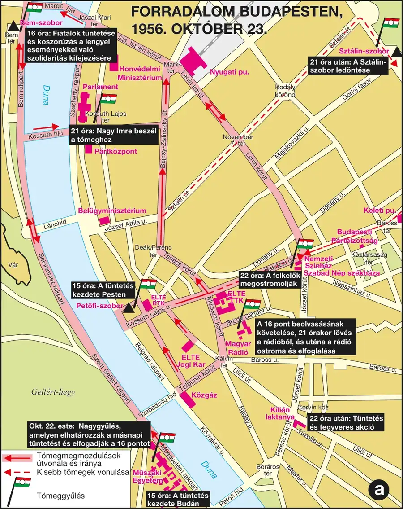
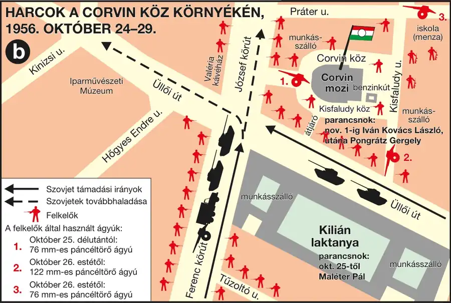
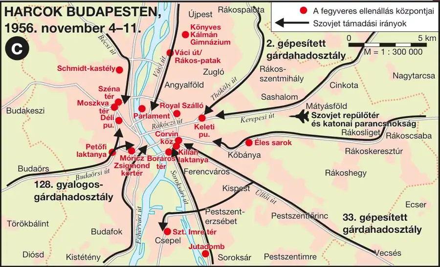
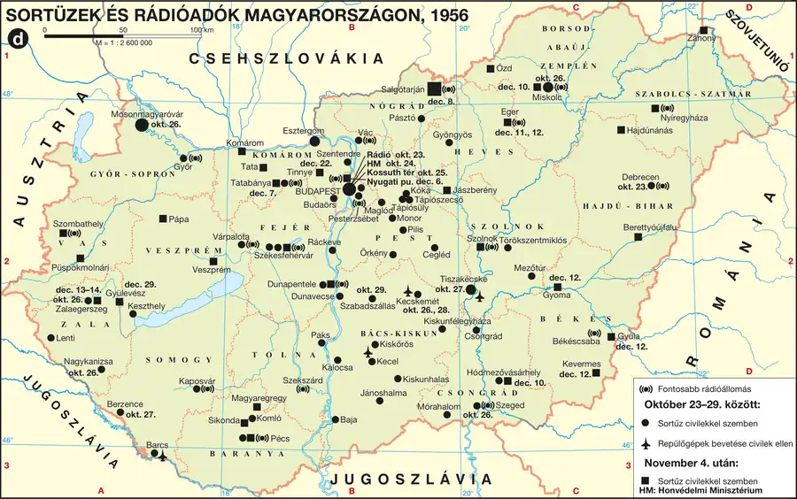

Desztalinizáció és belpolitikai válság
Értsd meg, hogyan gyengült meg a Rákosi-rendszer legitimációja.
Nagy Imre „új szakasza”
Sztálin 1953. márciusi halála után a szovjet vezetés korrekciót sürgetett. Nagy Imre 1953. július 4-én lett miniszterelnök. Programja enyhítette a terrort, mérsékelte az erőltetett iparosítást és a kollektivizálást, valamint javítani kívánta az életszínvonalat. 1955-ben leváltották, és megindult a visszarendeződés.
1956 politikai erjedése
Az SZKP XX. kongresszusán Hruscsov elítélte Sztálin személyi kultuszát. A Petőfi Kör vitái, a poznani munkásfelkelés, Rákosi leváltása és Rajk László október 6-i újratemetése tovább növelte a változás iránti igényt. Gerő Ernő kinevezése nem jelentett érdemi szakítást a sztálinista politikával.
Forrás – az „új szakasz” programja (tartalmi kivonat)
A kormányprogram a törvényesség helyreállítását, a lakosság terheinek mérséklését, a mezőgazdaság és a könnyűipar nagyobb támogatását ígérte.
Milyen két társadalmi-gazdasági célt azonosíthatsz?
Gerő Ernő kinevezése valódi politikai fordulatot hozott.
Hol szerveződtek jelentős reformviták?
Kit temettek újra 1956. október 6-án?
A forradalom kitörése – október 23.
A diákok követelései
A szegedi MEFESZ megalakulása után a budapesti műegyetemisták október 22-i gyűlése fogalmazta meg a legismertebb követeléseket. A pontok több változatban – 10, 14 és 16 pontos formában – terjedtek. Közös elemeik közé tartozott a szovjet csapatok kivonása, a politikai szabadságjogok és Nagy Imre kormányfői szerepe.
Október 23. eseményei
A Petőfi-szobortól a Bem térre, majd a Kossuth térre vonuló békés tömeghez százezrek csatlakoztak. Este ledöntötték a Sztálin-szobrot. A Rádiónál a követelések beolvasásának megtagadása, az ÁVH fellépése és a lövések fegyveres összecsapáshoz vezettek. Nagy Imrét október 24-én ismét miniszterelnökké nevezték ki.
Forradalom Budapesten, 1956. október 23.
A tüntetés útvonala és az esti forradalmi események fő budapesti helyszínei követhetők.

Forrás – a Sztálin-szobor ledöntése
A diktatúra monumentális jelképe a Felvonulási téren a tömeg és hegesztővágók segítségével dőlt le.
Mi adta az esemény szimbolikus jelentőségét?
A tüntetés kezdettől fegyveres felkelésnek indult.
Hol kezdődött a fegyveres összecsapás?
Mi a Magyar Egyetemisták és Főiskolások Szövetségének rövidítése?
Szabadságharc és a forradalom győzelme
A Corvin köz, a Tűzoltó utca és a Széna tér felkelői kézifegyverekkel és Molotov-koktélokkal küzdöttek a szovjet páncélosok ellen. Október 25-én a Kossuth téren fegyvertelen tüntetők közé lőttek. A lövések több irányból érkeztek; a pontos felelősség és a tűz megindulásának körülményei történészi vita tárgyai.
Október 28-án Nagy Imre nemzeti demokratikus mozgalomként ismerte el az eseményeket, tűzszünetet hirdetett és bejelentette az ÁVH feloszlatását. Megkezdődött a szovjet csapatok kivonulása Budapestről, újjászerveződtek a pártok és létrejött a Nemzetőrség. November 1-jén a kormány kinyilvánította Magyarország semlegességét és kilépését a Varsói Szerződésből.
Harcok a Corvin köz környékén, 1956. október 24–29.
A legfontosabb pesti felkelőközpont környezetének harcai és stratégiai pontjai vizsgálhatók.

Forrás – a Kossuth téri sortűz
Október 25-én a Parlament előtti, jórészt fegyvertelen tömegben száz körüli vagy azt meghaladó számú ember vesztette életét; a pontos áldozatszám és felelősség nem állapítható meg teljes bizonyossággal.
Miért szükséges forráskritika az esemény vizsgálatakor?
Az október 28-i győzelem tartósnak bizonyult.
Mely szervezetből jelentette be a kilépést Nagy Imre?
Ki kapcsolódott a Széna téri felkelőcsoport vezetéséhez?
A szovjet intervenció – november 4.
November 4-én hajnalban megindult a második szovjet intervenció. Nagy Imre rádióbeszédben jelentette be a támadást, majd a jugoszláv követségre menekült. A szovjet támogatással létrehozott, Kádár János vezette Magyar Forradalmi Munkás-Paraszt Kormány megalakulását Szolnokról jelentették be.
Budapesten november 11-ig folytak fegyveres utóvédharcok; Csepel tartott ki a legtovább. A katonai vereség után munkástanácsok, sztrájkok, röplapok és tüntetések folytatták a politikai ellenállást. A Nagy-budapesti Központi Munkástanács november 14-én alakult meg.
Harcok Budapesten, 1956. november 4–11.
A második szovjet intervenció hadmozdulatai és a fegyveres ellenállás gócpontjai azonosíthatók.

Forrás – munkástanácsi követelések
Szovjet csapatkivonást, semlegességet, szabadságjogokat és Nagy Imre kormányának elismerését követelték.
Mit bizonyítanak ezek a követelések?
A fegyveres harc veresége azonnal megszüntetett minden ellenállást.
Hová menekült Nagy Imre?
Hogyan nevezték köznyelvben a kádári karhatalom tagjait?
Megtorlás, áldozatok és emigráció
A Kádár-rendszer statáriummal, internálással, börtönbüntetésekkel és kivégzésekkel számolta fel az ellenállást. A kutatások több mint húszezer elítéltről, mintegy 13 ezer internáltról és körülbelül 230 kivégzettről számolnak be; az adatsorok eltérő körű kategóriákat használhatnak. A harcok magyar halálos áldozatainak száma körülbelül 2500, mintegy 200 000 ember pedig elhagyta az országot.
Nagy Imrét, Maléter Pált és Gimes Miklóst titkos per után 1958. június 16-án kivégezték. Mansfeld Pétert 1959. március 21-én, nem sokkal tizennyolcadik születésnapja után végezték ki. Nem igaz, hogy a jog miatt kötelezően meg kellett várni nagykorúságát: a korabeli szabályozás bizonyos esetekben már tizenhat éves kortól lehetővé tette a halálbüntetést.
Sortüzek és rádióadók Magyarországon, 1956.
A vidéki forradalmi események, sortüzek és a forradalmi rádióadók országos hálózata értelmezhető.

Forrás – Nagy Imre és társai pere
A jugoszláv követség elhagyásakor adott biztonsági ígéret ellenére elhurcolták őket, majd zárt, politikailag irányított eljárásban ítélték el.
Mely körülmények mutatják a per koncepciós jellegét?
Mansfeld kivégzésével jogilag kötelező volt megvárni a 18. életévét.
Mikor hajtották végre Nagy Imre halálos ítéletét?
Körülbelül hányan hagyták el az országot?
Nemzetközi háttér és jelentőség
A magyar forradalommal egy időben bontakozott ki a szuezi válság. Ez megosztotta a nemzetközi figyelmet, és válságba sodorta a nyugati szövetségesek együttműködését. Az Egyesült Államok együttérzést fejezett ki, de katonai beavatkozást nem vállalt: Magyarország a szovjet érdekszférában feküdt, a közvetlen fellépés pedig nagyhatalmi, akár nukleáris háború veszélyével járt volna.
Nincs bizonyíték formális szovjet–amerikai cserealkura, amelyben Szuezért cserébe Magyarországot „átadták” volna. A két válság kölcsönösen befolyásolta a diplomáciai környezetet, de az okokat nem szabad egyetlen titkos alkuval magyarázni.
Az ENSZ 1957-ben öttagú különbizottságot hozott létre, amely népfelkelésként értékelte az eseményeket és elítélte a szovjet beavatkozást. Magyarország ENSZ-tagságát nem függesztették fel; a Kádár-kormány képviseletének mandátumáról nem hoztak érdemi elfogadó döntést, a „magyar kérdés” pedig 1963-ig napirenden maradt.
Forráskritikai feladat – Szuez és Magyarország
Az események időbeli egybeesése önmagában nem bizonyít titkos nagyhatalmi alkut.
Milyen két külön ok magyarázza az amerikai katonai távolmaradást?
Az USA katonai beavatkozással segítette a forradalmat.
Mi a helyes állítás?
Hány tagú ENSZ-különbizottság vizsgálta a magyar ügyet?
Összefoglaló
| Dátum | Esemény |
|---|---|
| 1953. július 4. | Nagy Imre első kormányának megalakulása |
| 1956. október 23. | A forradalom kitörése |
| október 25. | Kossuth téri sortűz |
| október 28. | Politikai fordulat, tűzszünet |
| november 1. | Semlegesség és kilépés a Varsói Szerződésből |
| november 4. | Második szovjet intervenció |
| 1958. június 16. | Nagy Imre és társai kivégzése |
| 1963 | Részleges általános amnesztia; a „magyar kérdés” lekerül az ENSZ napirendjéről |
Komplex feladatbank
K1. Hasonlítsd össze október 28. és november 4. politikai-katonai helyzetét!
K2. Mutasd be a munkástanácsok szerepét!
K3. Értékeld forráskritikailag a „Nyugat elárulta Magyarországot” állítást!
Esszéműhely
Téma: Mutassa be az 1956-os forradalom kitörését, eredményeit és leverését!
Szóbeli tételvázlat
- Desztalinizáció, Nagy Imre és a reformellenzék.
- A diákmozgalom és október 23.
- Felkelőcsoportok, sortüzek és az október 28-i fordulat.
- Semlegesség, november 4. és a Kádár-kormány.
- Megtorlás, áldozatok, emigráció.
- Szuez, ENSZ és nemzetközi jelentőség.